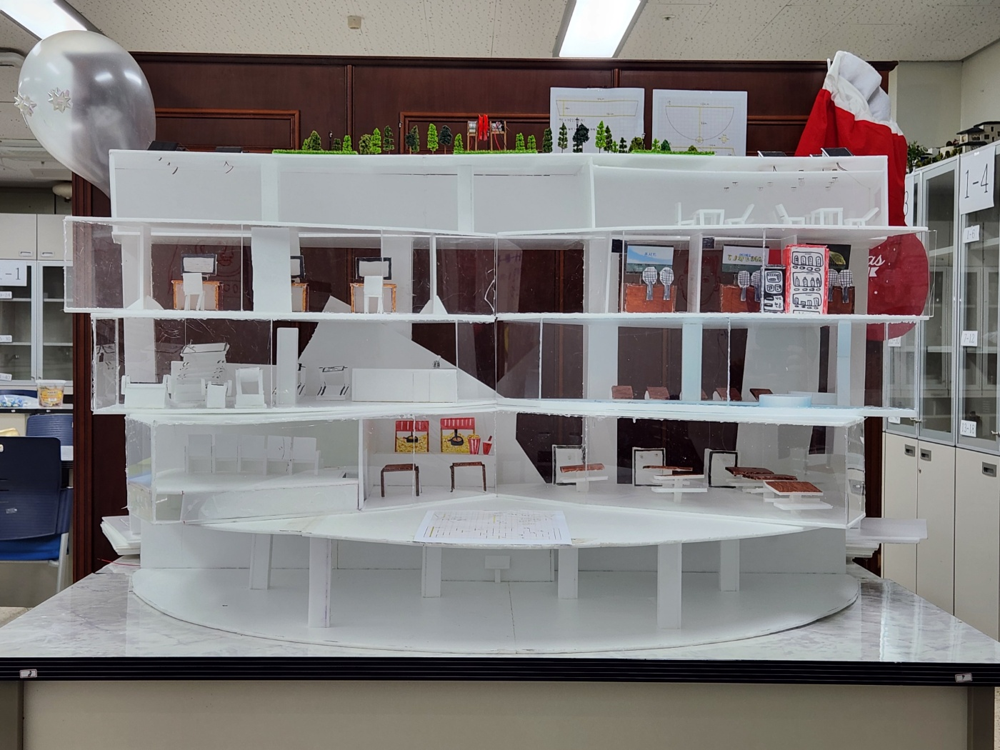

부스 체험 방법
뿅망치 게임
가위바위보로 정해진 공수에서 상대보다 빠르게 뿅망치를 사용(방어)하세요!
5판 3선승제로 진행되어 최종 승자만이 아이스크림을 가져가게 됩니다.
부스 하이라이트
🏢 최첨단 빌딩 모형 전시회
공학 기술과 창의적 건축 설계를 접목시킨 미래지향적 건축물입니다.보통의 건축물과 달리 우리 동아리만의 독특한 콘셉트와 방향성이 돋보이도록 설계했습니다.
모든 부원들이 참여하여 만든 만큼 퀄리티 하나는 보장합니다.

🍦 아이스크림 증정
부스에 준비된 미니게임들을 통해 모은 토큰으로 아이스크림을 획득할 수 있습니다.문의 및 위치
🗺️ 부스 위치: 4층 기술실
🙋♂️ 문의: 부장 박준혁
본 웹사이트는 동아리 축제 체험 부스를 소개하기 위해 제작되었습니다.